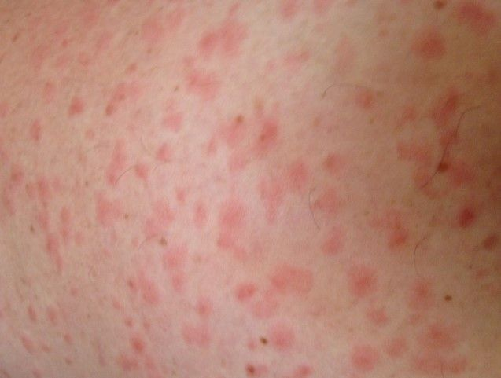
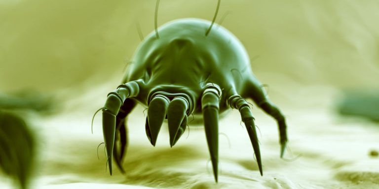
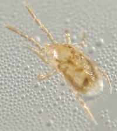

آیا تا به حال با خارشهای پوستی بیدلیل، جوشهای ریز و التهابی یا حساسیتهای تنفسی ناگهانی مواجه شدهاید که پزشکان نتوانستهاند دلیل قطعی برای آن پیدا کنند؟ شاید شما هم قربانی مایتها (Mites) شدهاید؛ موجودات ریز و تقریباً نامرئی که در گرد و غبار خانه، لانه پرندگان، تشکها، فرشها و حتی روی پوست خود شما زندگی میکنند.
مایتها از رده عنکبوتیان (Arachnida) هستند و با کنهها خویشاوندی نزدیک دارند، اما برخلاف کنهها که معمولاً بزرگتر و قابلرویتتر هستند، بیشتر مایتها میکروسکوپی بوده و با چشم غیرمسلح دیده نمیشوند. این موجودات ریز، با وجود اندازه کوچکشان، میتوانند طیف وسیعی از مشکلات را برای انسان ایجاد کنند؛ از آلرژیهای تنفسی گرفته تا بیماریهای پوستی مانند گال (جرب) و گزشهای دردناک.
در این مقاله جامع از شرکت سمپاشی نانوفناوران بهداشت تهران، شما را با انواع مایتها، بهویژه مایت کبوتر که در سالهای اخیر به یک معضل جدی در منازل تبدیل شده است، آشنا میکنیم. همچنین روشهای تشخیص، پیشگیری و مهمتر از همه، سمپاشی تخصصی و ریشهکنی اصولی این آفات را به شما آموزش خواهیم داد.

پیش از پرداختن به انواع مایتها، بهتر است یک تمایز اساسی را روشن کنیم. در زبان عامیانه و حتی در برخی شرکتهای سمپاشی، اصطلاحات «مایت» و «کنه» به جای یکدیگر استفاده میشوند، اما از نظر علمی، این دو تفاوتهای مهمی دارند:
| ویژگی | مایت (Mite) | کنه (Tick) |
|---|---|---|
| اندازه | معمولاً کمتر از ۲ میلیمتر (اغلب میکروسکوپی) | معمولاً بزرگتر از ۲ میلیمتر |
| قطعات دهانی | هیپوستوم ساده و بدون دندانه | هیپوستوم دندانهدار |
| اندام حسی | فاقد اندام هالر (Haller) در پای اول | دارای اندام هالر در پای اول |
| بدن | غالباً پرمو با موهای بلند و مشخص | معمولاً کممو با موهای کوتاه |
| رژیم غذایی | بسیار متنوع (آزاد، انگلی، گیاهخوار، شکارچی) | تماماً انگلی و خونخوار |
مایتها از نظر بیولوژی بسیار متنوعتر از کنهها هستند. برخی از آنها زندگی آزاد دارند و از مواد پوسیده یا قارچها تغذیه میکنند، برخی گیاهخوار و آفت کشاورزی هستند و تعدادی نیز خونخوار و انگل انسان، حیوانات اهلی و پرندگان میباشند.
مایتها به دستههای مختلفی تقسیم میشوند که هر کدام مشکلات خاصی را برای انسان ایجاد میکنند. در اینجا به مهمترین آنها اشاره میکنیم:
نام علمی: Dermatophagoides pteronyssinus و D. farinae
این مایتها در گرد و غبار خانه، بهویژه در تشکها، بالشها، پتوها، فرشها و مبلمان زندگی میکنند. آنها از سلولهای مرده پوست انسان و حیوانات خانگی تغذیه میکنند و در محیطهای گرم و مرطوب به سرعت تکثیر میشوند.
مشکلات ایجاد شده: این مایتها گاز نمیگیرند، اما مدفوع و اجساد آنها حاوی پروتئینهای آلرژن قوی است که میتواند باعث آسم، رینیت آلرژیک، تب یونجه و درماتیت آلرژیک شود. اگر صبحها با گرفتگی بینی، عطسه یا خارش چشم از خواب بیدار میشوید، احتمالاً با این مایتها سر و کار دارید.

نام علمی: Sarcoptes scabiei var. hominis
این مایت عامل بیماری گال (جرب) در انسان است. ماده بالغ این مایت در زیر لایه شاخی پوست تونل میزند و روزانه ۲ تا ۳ میلیمتر پیش میرود و تخمگذاری میکند.
مشکلات ایجاد شده: خارش شدید و شبانه، بهویژه در نواحی چینخورده پوست مانند بین انگشتان، مچ دست، آرنج، ناف و اندام تناسلی. در موارد شدید، فرم نروژی یا پوستهای این بیماری میتواند هزاران مایت را روی پوست میزبان داشته باشد.
نام علمی: Demodex folliculorum و D. brevis
این مایتها به طور طبیعی در فولیکولهای مو و غدد چربی پوست انسان زندگی میکنند و تقریباً همه افراد به مقدار کم آنها را دارند. آنها شبها فعالتر هستند و از چربیها و سلولهای مرده پوست تغذیه میکنند.
مشکلات ایجاد شده: در صورت تکثیر بیش از حد (به دلایل نقص ایمنی یا رعایت نکردن بهداشت)، میتوانند باعث دمودیکوزیس، التهاب پوست صورت، قرمزی، خارش و تشدید بیماری روزاسه (رزاسه) شوند.
این دسته شامل مایتهایی است که روی بدن پرندگان (مانند کبوتر، مرغ) و جوندگان (مانند موش) زندگی میکنند و از خون آنها تغذیه مینمایند.
مشکلات ایجاد شده: وقتی پرنده یا جونده میزبان، لانه را ترک میکند یا از بین میرود، این مایتها برای یافتن منبع غذایی جدید، به محیطهای انسانی هجوم میآورند و انسان را گاز میگیرند.

در سالهای اخیر، مایت کبوتر (با نام علمی Dermanyssus gallinae یا Ornithonyssus spp.) به یکی از معضلات اصلی در مناطق شهری، بهویژه در طبقات بالای ساختمانها و مناطقی که کبوتران وحشی لانه میسازند، تبدیل شده است.
برخی از متخصصان این حشره را با نام کنه کبوتر نیز میشناسند، اما از نظر علمی، این موجودات در دسته مایتهای پرندگان قرار میگیرند.
مایت کبوتر یک انگل خارجی خونخوار است که عمدتاً از خون کبوتران تغذیه میکند. مشکل زمانی شروع میشود که:
اندازه مایت کبوتر: حدود ۱ تا ۳ میلیمتر است و در ابتدا به رنگ کرمی یا شیری دیده میشود، اما پس از تغذیه از خون، به رنگ قرمز در میآید.
گزش مایت کبوتر بسیار آزاردهنده است و علائم مشخصی دارد:
⚠️ نکته مهم: برخلاف تصور عموم، مایت کبوتر به صورت دائمی در بدن انسان زندگی نمیکند و پس از تغذیه، پوست را ترک میکند. با این حال، گزشهای مکرر آن میتواند آرامش و سلامت شما را به شدت تحت تأثیر قرار دهد.
برای تشخیص آلودگی به مایت کبوتر، به این نشانهها توجه کنید:
| نشانه | توضیح |
|---|---|
| مشاهده خود مایت | نقاط ریز و متحرک (سیاه، قرمز یا قهوهای) روی پوست، لباس یا ملحفه |
| خارشهای شبانه | خارش شدید که عمدتاً در شب تشدید میشود |
| جوشهای زیرپوستی | برجستگیهای ریز و خارشدار روی پوست (اندازه حدود ۱ میلیمتر) |
| وجود لانه کبوتر | مشاهده لانه، پر یا فضولات کبوتر در نزدیکی منزل (پشت پنجره، کولر، بالکن) |
| نقاط سیاه روی ملحفه | مدفوع و فضولات مایتها که شبیه دانههای فلفل است |
پیشگیری همیشه بهتر از درمان است. با رعایت این نکات، میتوانید از ورود مایتها به خانه خود جلوگیری کنید:
اگر با وجود رعایت نکات پیشگیرانه، همچنان با مشکل مایتها، بهویژه مایت کبوتر، دست و پنجه نرم میکنید، زمان آن رسیده که از یک خدمات سمپاشی تخصصی بهره ببرید.
چرا سمپاشی خانگی معمولاً شکست میخورد؟
کارشناسان ما با بررسی کامل محیط، منبع اصلی آلودگی را شناسایی میکنند. این شامل لانههای کبوتر، نقاط ورود و مناطق استراحت مایتها میشود.
در صورت وجود لانه پرندگان، ابتدا لانهها بهصورت اصولی حذف و محل ضدعفونی میشود.
برای از بین بردن مایتها از ترکیب سموم فسفره و پیرتروئیدی استفاده میکنیم که هم اثر تماسی فوری و هم اثر باقیمانده دارند.
محلهایی که مایتها در آنها استراحت میکنند، مانند مبلمان، تختخواب، تشک، پشت کابینتها و شکافهای دیوار، بهطور کامل سمپاشی میشوند.
در صورت نیاز، از طعمههای مخصوص و روشهای لاروکشی برای جلوگیری از بازگشت مجدد استفاده میشود.
پس از سمپاشی، محیط به مدت ۲ تا ۴ ساعت بسته میشود تا سموم اثر کنند و سپس با تهویه کامل، محیط برای حضور افراد ایمن میگردد.
هزینه سمپاشی مایت به عوامل زیر بستگی دارد:
| عامل | تأثیر بر هزینه |
|---|---|
| مساحت محیط | هرچه محیط بزرگتر باشد، هزینه بیشتر است |
| شدت آلودگی | آلودگی شدید نیاز به عملیات بیشتر و زمانبرتری دارد |
| نوع مایت | مایت کبوتر نیاز به روشهای خاصی دارد که ممکن است هزینه را افزایش دهد |
| دسترسی به نقاط آلوده | سمپاشی سقفهای بلند یا فضاهای صعبالوصول هزینه بیشتری دارد |
💡 توصیه: برای دریافت مشاوره رایگان و استعلام دقیق هزینه، با کارشناسان ما تماس بگیرید.
خیر، سموم استفادهشده توسط شرکت نانوفناوران با رعایت کامل استانداردهای بهداشتی انتخاب میشوند. در هنگام سمپاشی، افراد و حیوانات از محیط خارج میشوند و پس از تهویه کامل، محیط کاملاً ایمن است.
اثر سمپاشی در مایتهای کبوتر فوری است و مایتهای بالغ به سرعت از بین میروند. در مورد مایتهای گرد و غبار و گال، ممکن است نیاز به تکرار درمان باشد.
استفاده از اسپریهای خانگی معمولاً مؤثر نیست و فقط مایتهای سطحی را از بین میبرد. همچنین استفاده نادرست از سموم میتواند برای سلامتی خطرناک باشد. روشهای تخصصی مانند سمپاشی ترکیبی نیاز به تجهیزات و دانش دارد.
بله، معمولاً ۲ تا ۴ ساعت باید محیط را ترک کنید تا سموم تهویه شوند. کارشناسان زمان دقیق را به شما اعلام میکنند.
اگر منبع اصلی (لانه پرنده) حذف شود و نکات پیشگیری رعایت شود، احتمال بازگشت بسیار کم است. شرکت نانوفناوران خدمات خود را با ضمانت ارائه میدهد.
مایتها، بهویژه مایت کبوتر، یکی از چالشهای جدی در محیطهای شهری هستند که میتوانند آرامش و سلامت شما را به خطر بیندازند. این موجودات ریز با گزشهای خود باعث خارشهای شدید، حساسیتهای پوستی و حتی مشکلات تنفسی میشوند.
شرکت سمپاشی نانوفناوران بهداشت تهران با بهرهگیری از دانش فنی روز، تجهیزات پیشرفته و سموم استاندارد، آماده ارائه خدمات تخصصی و تضمینی در زمینه سمپاشی مایت و ریشهکنی کنه کبوتر به شماست. تیم کارشناسان ما با شناسایی دقیق منبع آلودگی و استفاده از ترکیبات تخصصی، محیطی امن و آرام را به شما باز میگردانند.
🚀 همین حالا اقدام کنید:
📞 تماس فوری: ۰۹۱۲۰۷۰۵۷۴۶
💬 درخواست مشاوره رایگان: از طریق واتساپ یا ایتا
🔗 مشاهده سایر خدمات: کنترل آفات مسکونی